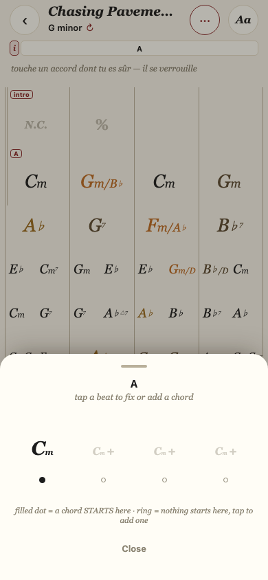
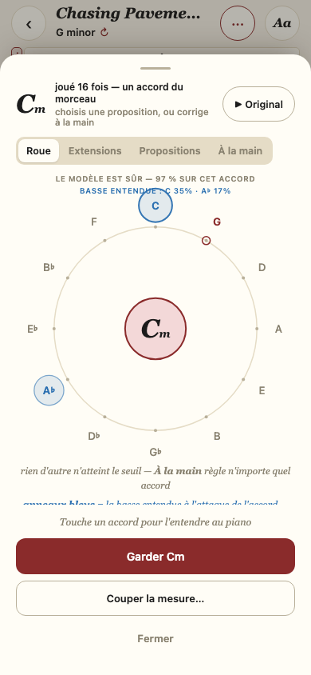
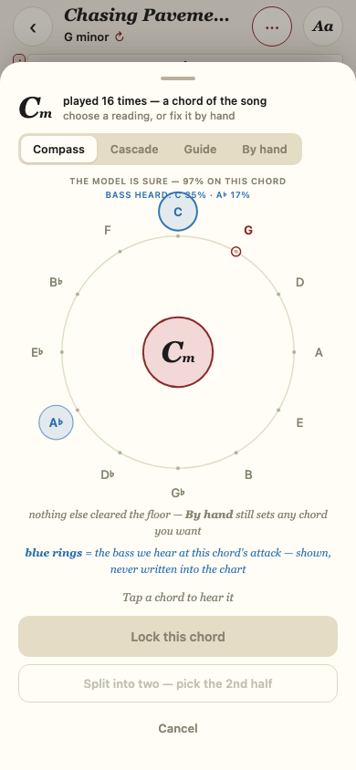
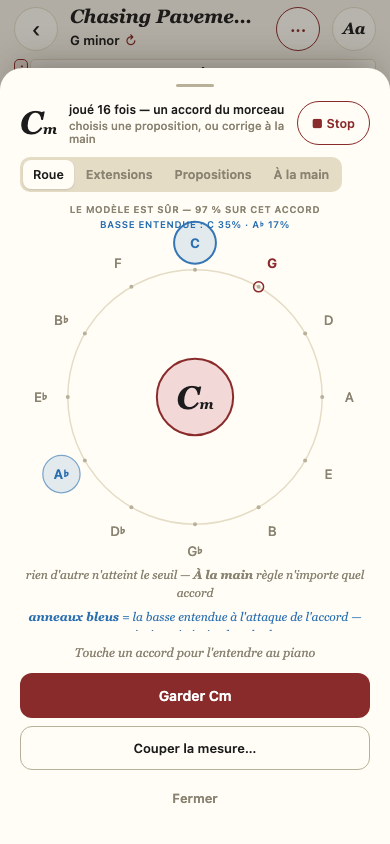
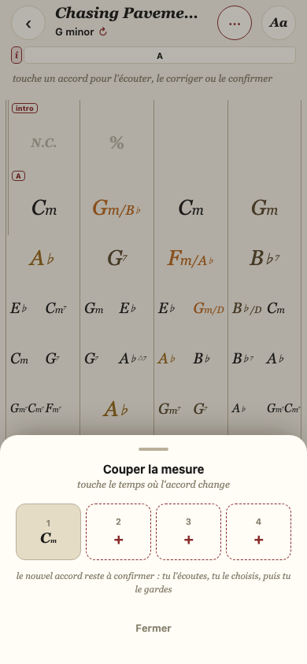
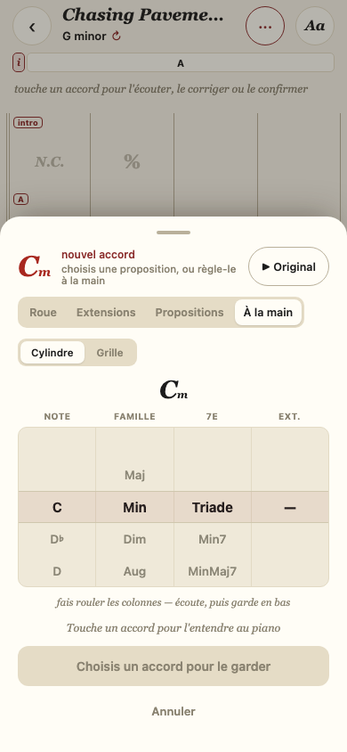
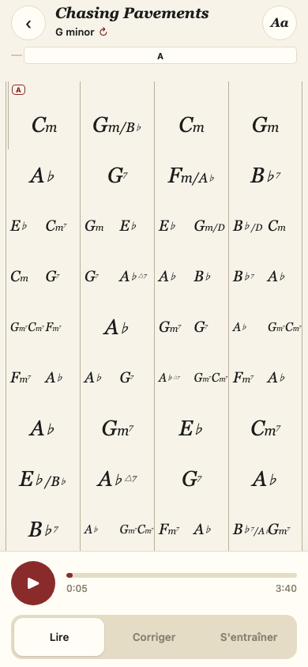
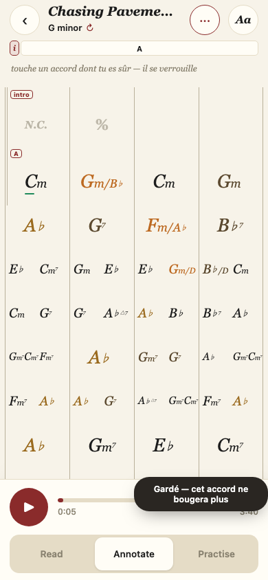
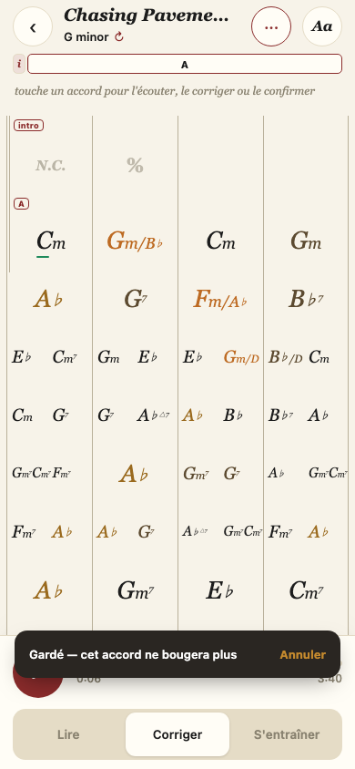

Cinq changements UX — avant / après
2026-10-01 · iPhone 390×844 · Chasing Pavements · « avant » = l'app au commit db547f2, « après » = branche feat/treillis-chart · captures Playwright, aucune écriture dans state/.
1. Toucher l'accord lui-même
Ce qui change : Chaque accord est sa propre zone (sa part de la mesure, toute la hauteur) ; un seul tap ouvre son éditeur. Plus de feuille à points, indice du haut rendu vrai.


2. Écouter l'enregistrement, seulement sur demande
Ce qui change : Un petit bouton ▶ Original joue t0→t1 de l'accord sur l'audio du morceau ; retaper ou fermer arrête. Pas de départ automatique, pas de boucle.


3. Un seul outil « Couper la mesure »
Ce qui change : Une règle des temps : on touche le temps où l'accord change (3+1 possible). Le nouvel accord naît non verrouillé, ▶ Original sur sa part ; Annuler défait la coupe ; « Recoller » ramène la mesure à un accord.


4. Tout en français
Ce qui change : Lire / Corriger / S'entraîner ; Roue / Extensions / Propositions / À la main ; Garder, Annuler, Fermer, légendes, aria-labels.

5. Filet de sécurité
Ce qui change : « Annuler » après garder / couper / recoller (et, une fois le chart revenu, après tempo ÷2/×2 et mesure 1) ; échec de sauvegarde annoncé avec « Réessayer ».


À savoir
- Il faut redémarrer le serveur pour que « Recoller » un accord du modèle et « Annuler » la mesure 1 soient gardés (routes /api/annotations et /api/bar1 modifiées) ; le JavaScript est déjà servi tel quel.
- « ▶ Original » n'a été testé que dans Chromium (arrêt à la fin du passage, mesuré) — à écouter une fois sur l'iPhone.
- Limites détaillées : docs/known_issues.md, section « UX top-5 ».